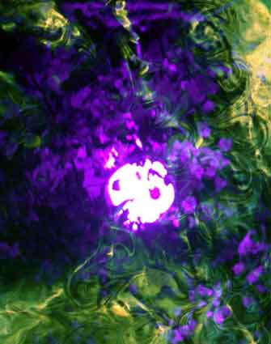

| Climate/Terrain | Foreste Temperate |
| Frequency | Rare |
| Organization | Small Group |
| Activity Cycle | Night |
| Diet | None |
| Intelligence | Low Intelligence (5 - 7) 6 punti combattimento |
| Treasure | None |
| Alignment | Neutral |
| No. Appearing | 1d3 |
| Armor Class | 5 |
| Movement | 12 (levitando) |
| Hit Dice | 3+3 |
| Thac0 | 18 |
| No. of Attacks | Tocco di Energia Negativa |
| Damage / Attacks | 1d3*2 Danni da Assorbimento Energia Positiva |
| Special Attacks | Aura di Energia Negativa |
| Special Defenses | Assorbimento di Energia Positiva, Immunità e Vulnerabilità ai Danni, Immunità dei Non Morti. |
| Magic Resistance | None |
| Size | Small (75 cm. di diametro) |
| Morale | Fearless (20) |
| XP value | 275 |
Descrizione
L'Anima della Foresta e un non morto che compare di notte e si presenta come un compatto globo di luce violacea che irradia energia che si espande a forma di nube irregolare intorno a se stesso. L'Anima della Foresta si sposta levitando ad un metro dalla superficie (sia essa solida e liquida). La creatura, volendo, può abbassarsi fino a toccare il suolo ma non può levitare ad un'altezza superiore ad un metro dallo stesso. Quando l'anima della foresta muore si spegne definitivamente senza lasciare alcuna traccia.
Combat
L'Anima della Foresta attacca gettandosi sul suo avversario al fine di risucchiarne l'energia vitale. Tale attacco può essere effettuato solo su esseri viventi la cui essenza si basi sull'energia positiva (non quindi su non morti e costruiti). Se il tiro per colpire riesce l'Anima della Foresta provocherà alla vittima 1d3*2 danni per assorbimento di energia positiva. Questa forma di attacco non può avere in alcun caso effetti critici. L'Anima della Foresta, quindi recupererà il 50% dei punti danno assorbiti dalla vittima senza poter, in ogni caso, superare il proprio ammontare massimo di punti ferita. L'attacco, inoltre, provoca automaticamente gli effetti del colpo speciale di combattimento Causare Grande Dolore.
L'Anima della Foresta, inoltre, irradia costantemente un'aura di energia negativa che si espande fino a tre metri di distanza intorno a se stessa. Alla fine di ogni round di combattimento tutti coloro si trovano in una qualsiasi posizione in corpo a corpo con il non morto subiscono 1d3 danni da energia negativa. Tale aura, però, è costantemente regolata dall'Anima della Foresta in modo tale da non danneggiare in alcun modo la flora circostante (fatta eccezione per le piante viventi).
L'Anima della Foresta, oltre ad essere
dotata di tutte le immunità tipiche dei non morti, è totalmente
immune ai danni da freddo e da elettricità
mentre subisce il 25% dei danni in
più (calcolati per eccesso) da tutte le magie di Evocation Air.
Per quanto attiene ai danni fisici l'Anima della Foresta
riduce al 50% (calcolato per difetto) i
danni da penetrazione mentre
subisce il 25% dei danni in più (calcolati
per eccesso) dei danni da botta.
Habitat/Society
L'Anima della Foresta si aggira di notte nelle foreste temperate attaccando le creature viventi in esse presenti. Solitamente, per il forte legame con la natura che la contraddistingue, l'Anima della Foresta non aggredisce gli animali che vivono pacificamente nella foresta.
Ecology
A differenza di molti non morti, nonostante l'Anima della Foresta non possa inserirsi regolarmente nel Primo Piano Materiale, il legame di questo essere con la foresta lo rende compatibile con la comune flora e fauna. Questo essere, infatti, preferisce non attaccare gli animali che comunemente vivono nella foresta.